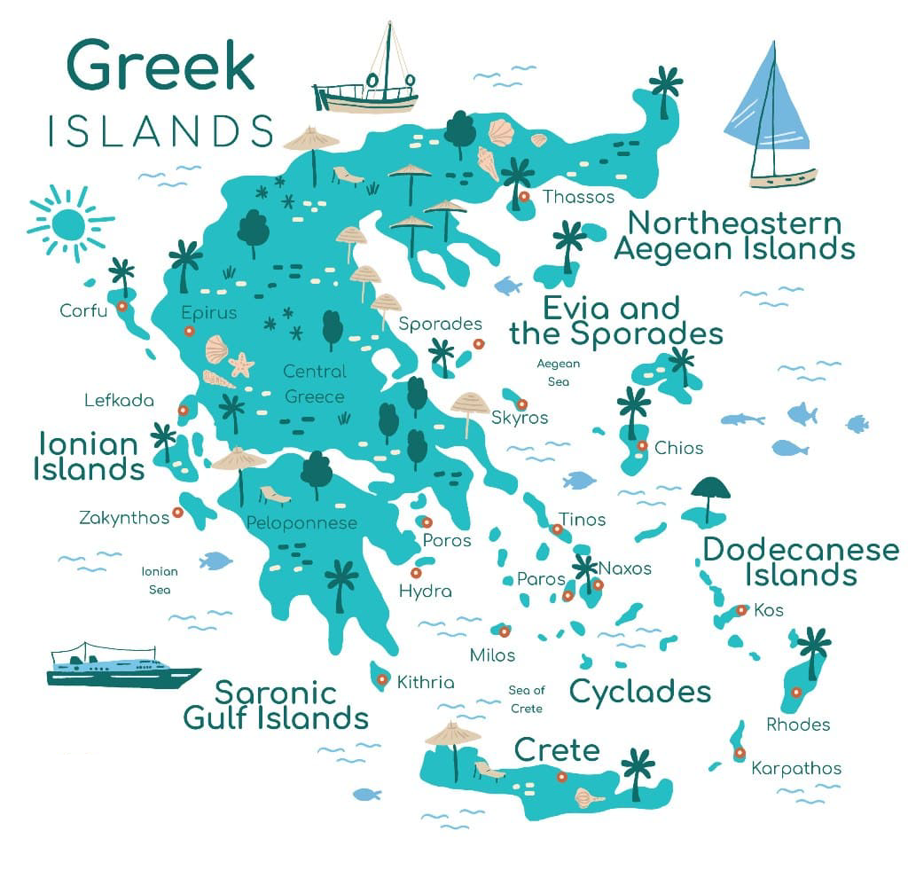
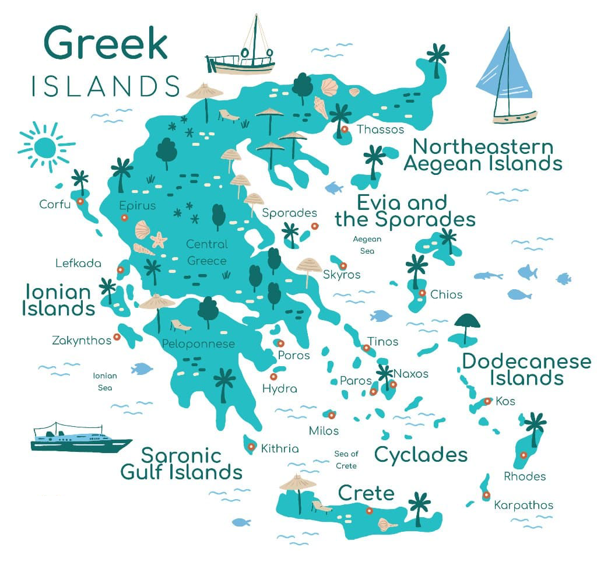

DESTINATIONS
ZAKYNTHOS
Zakynthos, a stunning Greek island in the Ionian Sea, is the perfect getaway for anyone seeking crystal-clear turquoise waters, dramatic cliffs, and postcard-worthy beaches like Navagio (Shipwreck Beach). Whether you're into relaxing on sandy shores, exploring sea caves by boat, or experiencing vibrant nightlife and delicious Mediterranean cuisine, Zakynthos offers a beautiful mix of adventure and serenity.
ATHENS
Athens is a must-visit for history lovers and culture seekers alike. As the birthplace of democracy and Western philosophy, the city is rich with iconic landmarks like the Acropolis, Parthenon, and ancient ruins scattered throughout. Beyond its historical charm, Athens buzzes with modern energy—offering lively neighborhoods, delicious Greek cuisine, trendy cafes, and stunning rooftop views. It’s a city where the ancient and contemporary blend seamlessly.
 

GREEK ISLANDS
The Greek Islands are a dreamy escape, offering something for every kind of traveler. With over 200 inhabited islands, you can hop from one to another to experience whitewashed villages, crystal-clear waters, sun-soaked beaches, and vibrant local culture. Whether you’re looking for the romance of Santorini, the party scene in Mykonos, the lush nature of Corfu, or the charm of smaller hidden gems, the Greek Islands deliver unforgettable beauty, history, and relaxation.
NEIGHBORING COUNTRIES
Turkey is a captivating destination where East meets West, blending rich history, diverse culture, and breathtaking landscapes. From the ancient ruins of Ephesus to the magical fairy chimneys of Cappadocia and the bustling bazaars of Istanbul, Turkey offers an unforgettable journey through time and tradition. Add to that stunning coastlines, delicious cuisine, and warm hospitality, and you’ve got a country that’s as vibrant as it is welcoming—perfect for a unique and enriching travel experience.

EXPLORE MORE
RELIGION AND CUSTOMS